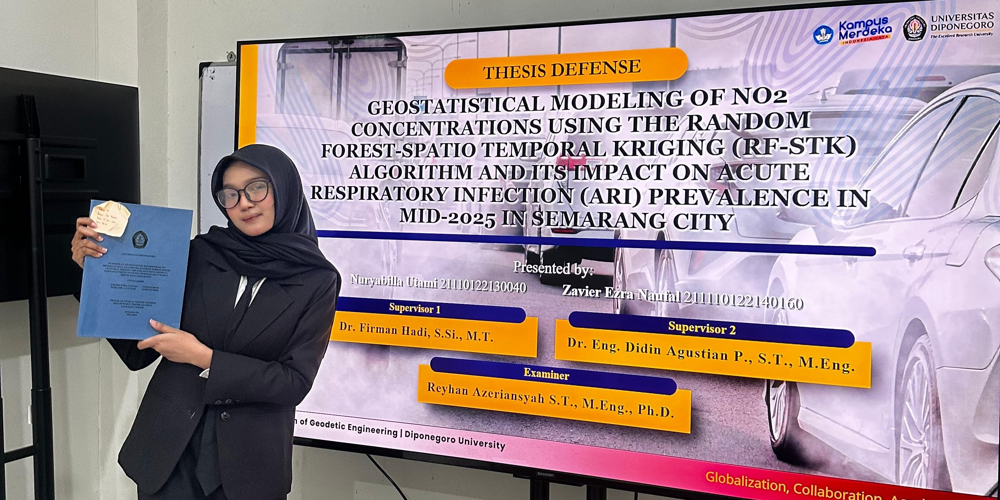
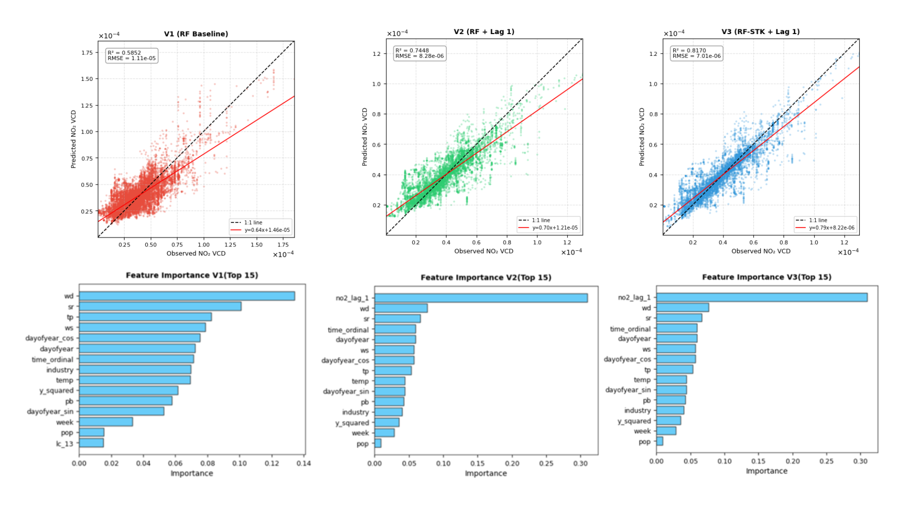
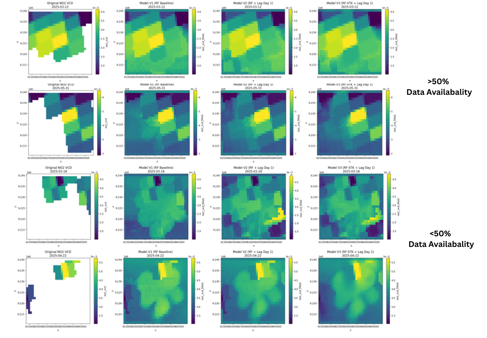
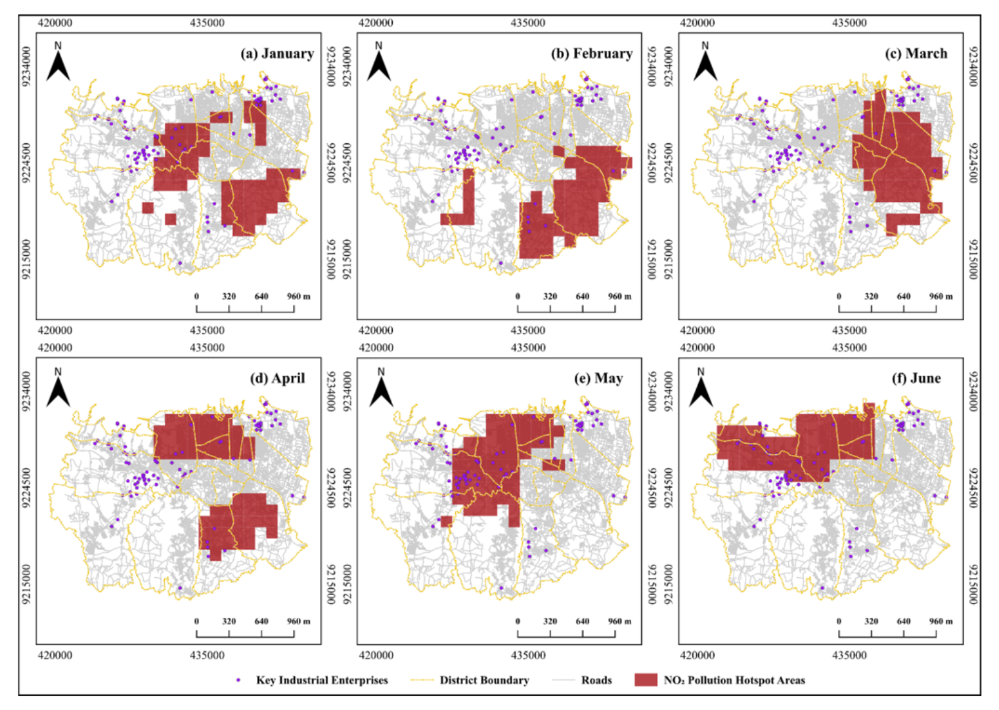
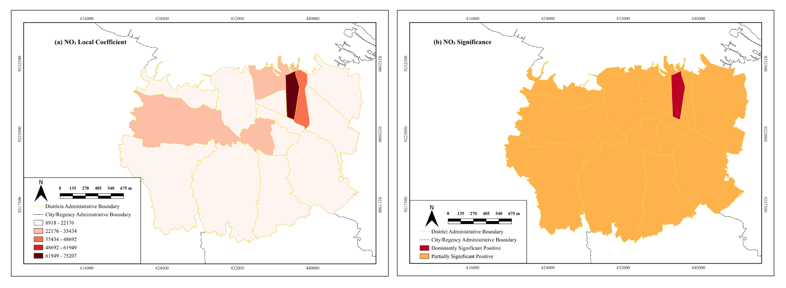

Final Project Research
Geostatistical Modeling of NO₂ Concentrations and Its Impact on Acute Repiratory Infections (ARI) Prevalence in Mid-2025 in Semarang City
June 2026 - by Nuryabilla

Research Background
Indonesia ranks among the largest contributors to global air pollution, accounting for approximately 75% of the global air pollution burden that directly affects global life expectancy. In Semarang, the Air Quality Index (AQI) reached 147, categorized as Unhealthy, with 154,883 Acute Respiratory Infection (ARI) cases reported by mid-2025. Nitrogen dioxide (NO₂), a carcinogenic gas, is assumed to be one of the major contributors to air pollution and is suspected to be linked to the high number of ARI cases. Therefore, this study aims to determine the influence of NO₂ concentration on the high number of ARI cases, given NO₂'s carcinogenic properties and its role as a major air pollutant.
However, monitoring this issue remains challenging, as Semarang has very limited air quality monitoring stations. Sentinel-5P satellite data offers a potential solution, given its wide spatial coverage and daily data availability. Nevertheless, cloud cover, satellite viewing geometry, and the applied QA filter threshold (≥0.75) result in significant data gaps in the imagery, which need to be addressed before the data can be reliably used for further analysis.
Objective
Tools


Data Used:
- NO₂ Sentinel-5P
- NO₂ Ground-based station
- Meteorology
- Elevation
- Land Cover
- ARI Cases
- Population Density
- Road Density
- NO₂ CAMS Global Reanalysis
Method
Results and Analysis
Model Performance Metrics
| Metrics | RF0 (V1) | RF (V2) | RFSTK (V3) |
|---|---|---|---|
| R² | 0.5709 ± 0.0998 | 0.7119 ± 0.1002 | 0.8022 ± 0.0641 |
| Slope | 1.08 × 10-5 ± 2.29 × 10-6 | 7.69 × 10-6 ± 1.69 × 10-6 | 6.36 × 10-6 ± 1.46 × 10-6 |
| RMSE | 7.67 × 10-6 ± 1.17 × 10-6 | 5.00 × 10-6 ± 1.15 × 10-6 | 3.85 × 10-6 ± 9.30 × 10-7 |
| MAE | 16.40% ± 14.85% | 11.71% ± 10.19% | 8.70% ± 9.26% |

Model Performance Summary
- RF-STK (V3) is the best model with highest accuracy and most stable on GroupKFold: R² = 0.80 ± 0.06
- Top predictors: NO₂ lag-1, wind direction, solar radiation
- Kriging residuals show strong spatial structure (range ≈ 8 km), it confirms RF-STK effectively corrects spatial bias
NO₂ Reconstructed Results
On days with >50% data availability: Model V1 produced coarse reconstructions that failed to capture TROPOMI's spatial patterns, while Model V2 performed better, generating more consistent patterns due to the lag day-1 feature. Model V3 achieved the best results, producing smoother and more spatially coherent maps through kriging correction.
On days with ≤50% data availability: All three models became less stable, with predictions increasingly dominated by predictor variables rather than actual satellite observations. This suggests that model reliability declines significantly when valid data availability is very limited.


NO₂ Hotspot Analysis
Hotspot shift is assumed to be linked to national holidays (Vesak Day, Ascension Day, Eid al-Adha), During these periods, traffic activity in residential and educational areas like Tembalang dropped sharply, causing hotspots in these zones to disappear altogether.
In contrast, industrial emissions in the western and northern regions remained consistently high, since these facilities continue operating regardless of holiday periods.
Road density within hotspot zones was also consistently higher than in non-hotspot zones, peaking at 12.39 km/km² in June.
Additionally, the number of industries located within hotspot zones rose sharply during May–June, reaching 33–34 facilities — roughly 40% of all industries in the study area.
NO₂ and ARI Prevalence Analysis

GTWR performed substantially better than OLS, with R² rising from 0.031 to 0.681, indicating a much stronger explanatory power. The model's residuals also became more normally distributed and stable, while spatial autocorrelation dropped significantly, as reflected in the decrease of Moran's I from 0.772 to 0.467.
In terms of NO2's influence on ARI, higher NO2 levels were generally associated with higher ARI prevalence, as indicated by a positive median coefficient across the study area. This relationship was strongest and most consistent in East Semarang, likely driven by heavy traffic, intensive industrial activity, and dense population in the area. In other sub-districts, however, the effect appeared only intermittently rather than continuously throughout the study period. Importantly, every sub-district exhibited a positive relationship between NO2 and ARI, although the strength of this association varied from place to place. Notably, NO2 concentrations and ARI cases tended to peak together around January and again in late February to March, coinciding with the dry season, when pollutants tend to remain trapped near the ground due to reduced atmospheric dispersion.